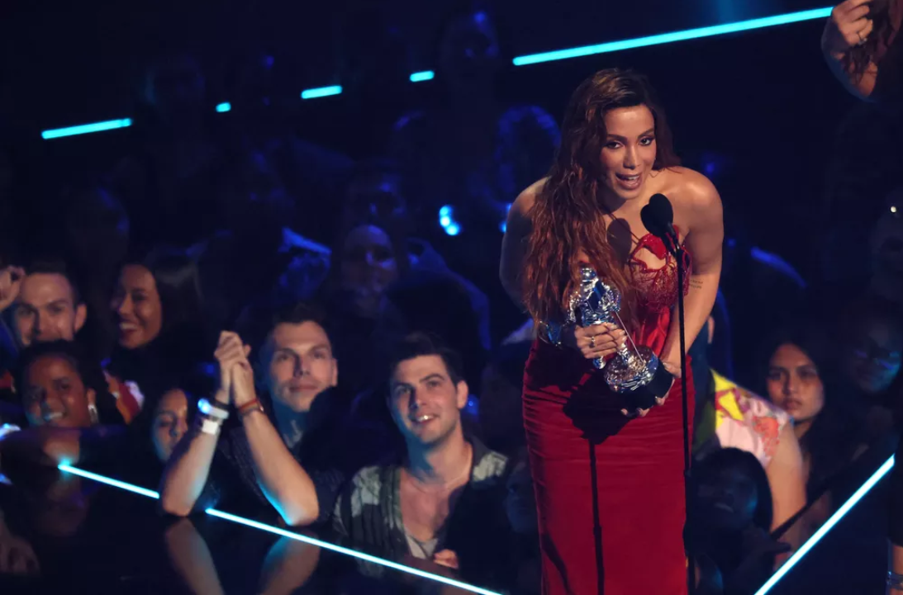

SITE DA ETEC 100%funcional
A etec tem os melhores sites Para Antes de receber o prêmio, Anitta também se apresentou no palco do VMA.
Ela foi a primeira artista brasileira a subir no palco para uma performance.
Anitta cantou e dançou 'Envolver', com um corpo de bailarinos, e emendou trechos das suas músicas de funk, como "Vai, Malandra" e "Movimento da Sanfoninha".
"Vocês pensaram que eu não ia rebolar a minha bunda hoje?", disse para o público em inglês.
